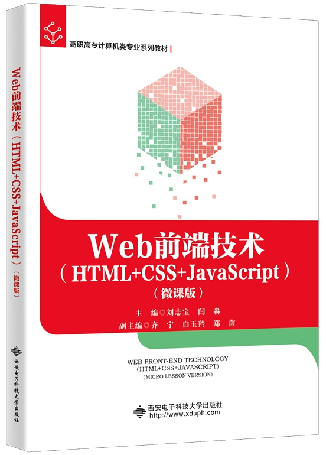

首页 > 书籍下载
《Web前端技术（HTML+CSS+JavaScript）（微课版）》PDF下载（高清完整版）
|  | 作者：刘志宝 |
| 出版时间：2022年08月01日 | |
| 出版社：西安电子科技大学出版社 | |
| ISBN：9787560664996 | |
| 总页数：256 |
这是一本关于 Web 前端开发新技能的书，本书注重理论与实践相结合，以职业能力为核心，可作为 Web 前端开发、Web 全栈开发技术人员的参考用书。
这里提供的是《Web前端技术（HTML+CSS+JavaScript）（微课版）》的高清 PDF 下载，内容完整，附带目录标签。
作为一个正在从事 Web 前端开发工作的读者来说，这本书对我的帮助非常大，很容易get到书中新的知识点，让我在工作上更能得心应手。
这本书自出版以来，也获得了许多业内人士的好评，其中一位读者是这样说的：
作为技术人员，每年都要买一些书籍来提升自己的开发技能，这本书真的很好，新知识点都讲解得很清晰。
还有一位读者评价：这本书很实用，对基础知识、实例、综合案例讲解都很系统，对工作帮助很大。
书籍目录
- 第1章 Web技术概述
- 1.1 Web的起源
- 1.2 Web技术相关概念
- 1.3 Web前端开发常用工具
- 1.4 HBuilderX的使用
- 本章小结
- 习题与实践
- 第2章 HTML基础
- 2.1 HTML概述
- 2.2 HTML的全局属性
- 本章小结
- 习题与实践
- 第3章 HTML基本元素
- 3.1 应用HTML的主体标签
- 3.2 应用HTML的无语义标签
- 3.3 应用HTML的标题和段落标签
- 3.4 应用HTML的格式化标签
- 3.5 应用HTML的图片标签
- 3.6 应用HTML的超链接标签
- 3.7 综合案例
- 本章小结
- 习题与实践
- 第4章 HTML表单页面
- 4.1 应用HTML的列表标签
- 4.2 应用HTML的表格标签
- 4.3 应用HTML的表单标签
- 4.4 应用HTML。的框架集标签
- 4.5 综合案例
- 本章小结
- 习题与实践
- 第5章 CSS选择器与常用属性
- 5.1 应用CSS样式单实现元素效果
- 5.2 应用CSS选择器实现元素效果
- 5.3 应用CSS实现背景属性设置
- 5.4 应用CSS实现字体属性设置
- 5.5 应用CSS实现文本属性设置
- 5.6 应用CSS实现尺寸属性设置
- 5.7 应用CSS实现列表属性设置
- 5.8 应用CSS实现表格属性设置
- 5.9 综合案例
- 本章小结
- 习题与实践
- 第6章 CSS盒模型与布局属性
- 6.1 CSS盒模型概述
- 6.2 应用CSS实现内边距、外边距属性设置
- 6.3 应用CSS实现边框、轮廓属性设置
- 6.4 应用CSS实现浮动属性设置
- 6.5 应用CSS实现定位属性设置
- 6.6 综合案例
- 本章小结
- 习题与实践
- 第7章 JavaScript基础语法
- 7.1 初探JavaScript编写工具
- 7.2 编写一个JavaScript实例
- 7.3 明晰JavaScript词法结构
- 7.4 应用JavaScript运算符
- 7.5 应用JavaScnpt数据类型
- 7.6 使用JavaScljpt选择结构
- 7.7 控制关键字
- 7.8 使用JavaScript函数
- 7.9 综合案例
- 本章小结
- 习题与实践
- 第8章 JavaScript数据结构
- 8.1 JavaScript数组的使用
- 8.2 JavaScdpt对象的使用
- ……
书籍下载
一键登录，免费下载完整版 PDF，文件名称：《Web前端技术（HTML+CSS+JavaScript）（微课版）》.pdf